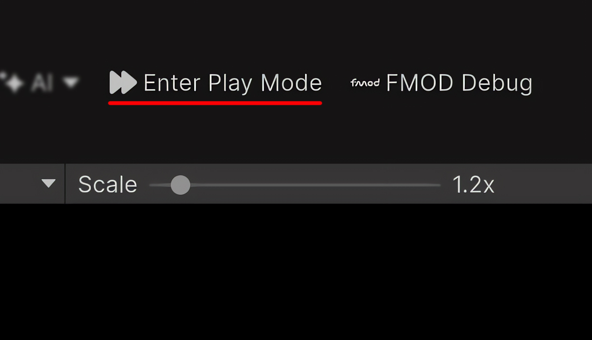
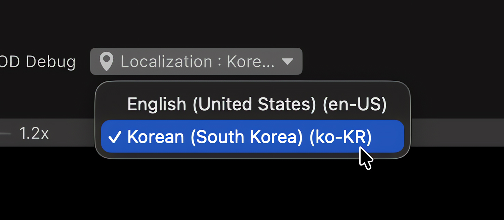

Toolbar controls
Enter Play Mode Options
The toggle enables or disables Unity's Enter Play Mode Options. It is disabled while the Editor is in Play Mode.

Scene Switcher
The Start Scene button on the left instantly opens the first enabled scene in the project's Build Settings or Build Profiles. The Scene Selection menu on the right allows you to quickly browse and switch between scenes located in the folders configured under Scene Search Folders.
Both controls are disabled in Play Mode. When switching scenes, Unity will automatically prompt you to save any unsaved changes if necessary.

Time Scale
The slider changes Time.timeScale in Edit Mode or Play Mode. Its reset action restores the value configured in Project Settings.

FMOD Debug
When FMOD for Unity is installed, the toggle controls the FMOD Debug Overlay. The control is disabled in Play Mode.

Localization
When Unity Localization is installed, the menu selects the active locale. It remains available in Edit Mode and Play Mode.

Play Mode availability
| Module | Edit Mode | Play Mode |
|---|---|---|
| Enter Play Mode Options | Available | Disabled |
| Scene Switcher | Available | Disabled |
| FMOD Debug | Available | Disabled |
| Localization | Available | Available |
| Time Scale | Available | Available |